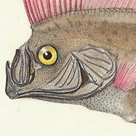

Mature proteins
| Product | Polyprotein | aa | Length | Mature protein | Genomic region | Sequence |
|---|

oarfish
Enter an NCBI accession for a viral genome or polyprotein. The page reads the GFF3 annotation and returns the protein sequence of every mature protein region, mapped through the coding sequence (frameshifts included). Everything runs in your browser.
| Product | Polyprotein | aa | Length | Mature protein | Genomic region | Sequence |
|---|